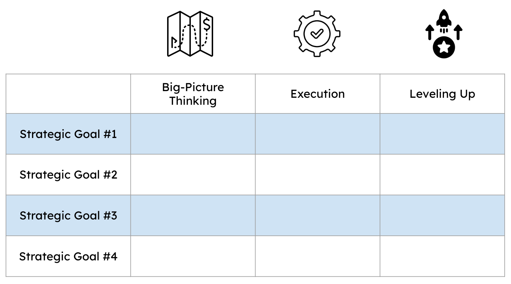
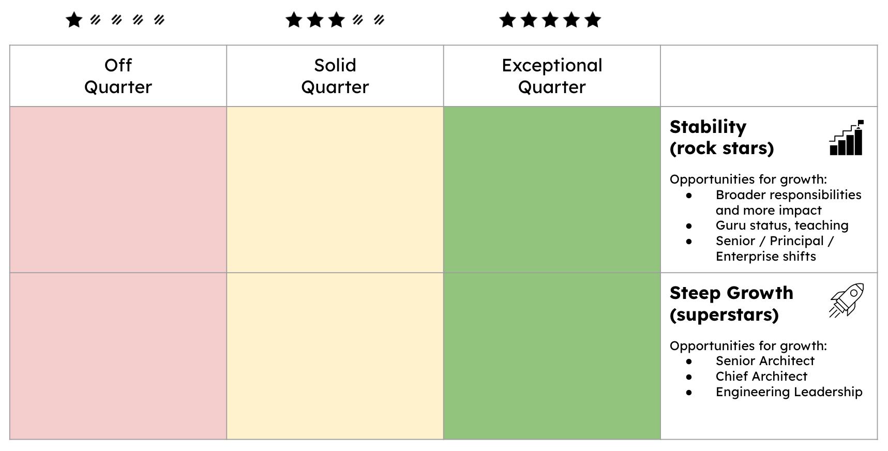

Managing & Growing Architects

IN THIS SECTION, YOU WILL: Get ideas and tips about developing architects’ career paths.
KEY POINTS:
- Grow and manage IT architects using the Radical Candor framework, emphasizing both personal care and direct feedback.
- Architect can follow two career trajectories—stable (rock stars) and steep (superstars)—each requiring different support and managing.
- Performance management should align with organizational strategy, focusing on impact through big-picture thinking, execution, and continuous improvement.
- Regular career conversations structured around life story, aspirations, and action plans are essential for personalized development.
- Cultivating a culture of feedback, learning, and recognition leads to higher engagement and better performance.
Performance & Growth Management
I have frequently used the Radical Candor framework (a management philosophy developed by Kim Scott) to manage the performance and growth of IT architects, focusing on fostering an environment of honest communication and personal development. Here’s how we apply the fundamental principles that you could use as an inspiration for your processes.
Key Principles
Care Personally
- Build Relationships: Prioritize building strong relationships with each IT architect, understanding their motivations, career aspirations, and personal goals. This foundation of trust makes it easier to give and receive feedback.
- Support and Empathy: Ensure each team member feels valued and supported, showing genuine care for their well-being and professional growth.
Challenge Directly
- Honest Feedback: Provide clear, specific feedback on their performance, ensuring it is both direct and constructive. This feedback helps IT architects understand their strengths and areas for improvement without ambiguity.
- Timely Interventions: Address performance issues promptly as they arise, preventing small problems from escalating and ensuring continuous improvement.
Give Praise and Criticism
- Balanced Approach: Maintain a balance between praising good performance and providing constructive criticism. This approach ensures that IT architects feel recognized for their achievements while being aware of areas needing development.
- Actionable Feedback: Deliver specific and actionable criticism, giving clear guidance on how to improve and succeed.
Create a Feedback Culture
- Encourage Two-Way Feedback: Foster an environment where IT architects feel comfortable giving feedback to us and their peers, promoting openness and trust within the team.
- Regular Check-ins: Conduct regular one-on-one meetings to discuss performance, goals, and feedback, ensuring continuous communication and alignment.
Focus on Growth
- Development Plans: Use feedback to create personalized development plans for each IT architect, aligning their growth with the organization’s objectives and career aspirations.
- Continuous Learning: Encourage a culture of continuous learning, providing resources and opportunities for skill enhancement and professional growth.
Manage Performance Reviews
- Transparent Criteria: Ensure that performance reviews are based on transparent and fair criteria so IT architects understand how their performance is assessed.
- Consistency: Apply performance standards consistently across the team to maintain fairness and equity in evaluations.
The described framework aims to create a supportive environment that promotes growth, accountability, and high performance.
Performance Management
Performance targets need to be closely aligned with the organization’s strategic goals and should be articulated in terms of their impact (refer to the impact section for more details). These targets should encompass the following aspects (Figure 2):
-
Big-Picture Thinking: Ensuring that every target supports the organization’s overarching vision and long-term objectives. It involves understanding how individual contributions fit into the broader context and drive the organization forward.
-
Execution: Focusing on effectively implementing strategies and plans. Support efficient and timely achievement of tasks and projects.
-
Leveling Up: Encouraging continuous improvement and development, Enhancing skills, processes, and performance standards, and fostering a culture of growth and excellence within the organization.
 Figure 2: An example framework for defining goals of architects: aligned with ogranizationals strategic goals, mesured in terms of three pillars of impact (big-picture thinking, execution, and leveling up).
Growth Management
Another idea I borrow from Radical Candor is the recognition that employees have different career trajectories and aspirations in growth and performance. It divides these into two main categories: the steep growth trajectory (superstars) and the stable growth trajectory (rock stars, solid as a rock). People of both growth trajectories could have poor or exceptional performance (Figure 3).
 Figure 3: An example framework for measuring the performance of architects of different growth trajectories.
Here’s an overview of how views growth and performance for rock stars and superstar:
Stable Growth Trajectory (Rock Stars)
These employees excel in their current roles and derive satisfaction from achieving excellence in a stable, consistent manner. They prefer deepening their expertise and maintaining a high level of performance without necessarily seeking rapid promotion.
Growth Opportunities for Rock Stars:
- Enhanced Responsibilities: Taking on critical projects, mentoring others, and providing technical oversight.
- Expertise Development: Becoming subject matter experts, gaining a “guru” status, and engaging in teaching and coaching.
- Role Variability: Shifting between roles (e.g., Senior, Principal, Enterprise Architect) to change the scope of work and maintain engagement.
Performance Management of Rock Stars:
- Feedback: Offer constructive feedback that helps them refine their expertise and maintain high performance.
- Support: Provide opportunities for continuous learning, such as advanced training or involvement in specialized projects.
- Recognition: Value their deep expertise and stability, acknowledging their critical role in the team’s success.
Steep Growth Trajectory (Superstars)
These individuals are highly ambitious and driven, continuously seeking new challenges and responsibilities. They have a rapid professional development pace and are often on the path to leadership roles.
Growth Opportunities for Superstars:
- Career Advancement: Superstars often aim for significant promotions, such as moving from Architect to Senior Architect, Chief Architect, or even transitioning to roles like Director of Engineering or CTO.
- Skill Development: They focus on acquiring new skills, mastering advanced technologies, and improving leadership capabilities.
- Increased Responsibilities: Taking on more complex projects, leading teams, and contributing to strategic initiatives.
Performance Management of Superstars:
- Feedback: Provide challenging feedback that pushes them to grow while recognizing their achievements.
- Support: Offer opportunities for further education, mentorship, and exposure to high-stakes projects.
- Recognition: Acknowledge their contributions and potential for future leadership roles within the organization.
By applying these principles, we aimed to create an environment where employees feel supported and challenged, leading to higher engagement, better performance, and more effective personal and professional growth.
Career Conversations
Whenever I can, I incorporate Radical Candor career conversations with architects. While you need to find a way for your team and organization, for me, it helped organize architects’ careers. The Radical Candor framework proposes three career conversations: Life Story, Dreams, and Career Action Plan.
Understanding Motivations and Values - Life Story
The first step in the Radical Candor career conversations approach is understanding the motivations and values driving individuals. You can gain valuable insights by paying close attention to a person’s life story and asking about their significant pivots and transitions. Why did they make those choices? What did those transitions teach them about their preferences in their work?
Exploring Aspirations - Dreams
The second step is to understand where people aim to be at the peak of their careers. While some managers might doubt that younger workers know what they want to be when they grow up, everyone has dreams. It’s essential to help individuals make these dreams more tangible. Some managers might worry about asking employees to focus on a single vision too early in their careers.
However, these concerns should not prevent you from having Career Conversations. People and their dreams evolve, so regular Career Conversations are crucial. Just like seeking feedback from your team, these discussions are an ongoing practice.
Creating an Action Plan - Career Action Plan
With an understanding of both the past and future, you can now develop a relevant and thoughtful action plan with clear responsibilities and timelines.
While Career Conversations take time, I integrated them into my usual one-on-one meetings. These discussions often become some of the most enjoyable and productive interactions.
To Probe Further
- General:
- Performance Reviews for IT Architects Template.
- Performance Reviews for Software Developers , by Gergely Orosz, May 2022.
- A Software Engineering Culture Test by Gergely Orosz
- For individual contributors:
- Performance Self Review Template and Example for Software Engineers , by Gergely Orosz
- A Work Log Template for Software Engineers, , by Gergely Orosz
- Get your work recognized: write a brag document , by Julia Evans
- For managers:
- Performance Review Example and Template for Engineering Managers , by Gergely Orosz
- Things I’ve learned transitioning from engineer to engineering manager , by Gergely Orosz
- Tools
Questions to Consider
- How can the Radical Candor framework improve performance and feedback dynamics in your team?
- Are you effectively balancing praise and criticism when managing architectural talent?
- What distinguishes a “rock star” from a “superstar” in your current organization?
- How does your team encourage or support different career trajectories for architects?
- Are your performance reviews fair, consistent, and clearly tied to strategic goals?
- What feedback culture exists within your architecture or engineering team?
- How often do you conduct career conversations, and are they structured around past, dreams, and action plans?
- What mechanisms are in place to ensure continuous learning and development for your architects?
- How does your team align individual architect goals with organizational impact?
- Are you recognizing and rewarding both stability (rock stars) and rapid growth (superstars) equally?
Appendix 2: Tools for Growing Architects |